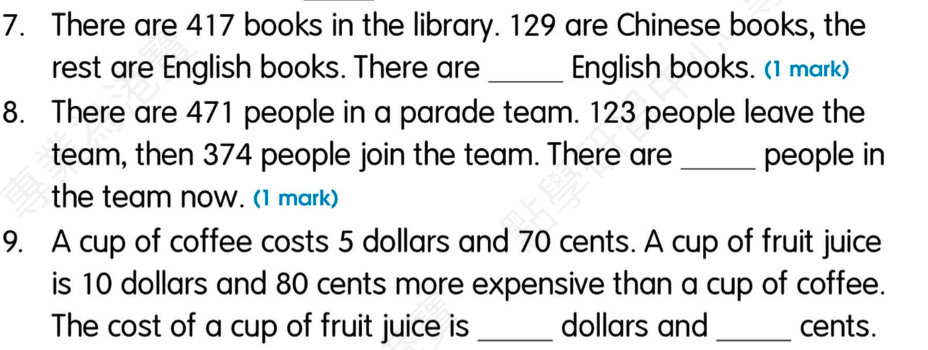

介词填空：I have breakfast (3) ___ 7:30 a.m.
Answer: at
Explanation: 学生答案：待确认；时间介词；具体时间点前用at
已掌握
| # | 单词/词组 | 中文意思 | 例句/说明 | 已掌握 |
|---|---|---|---|---|
| noun 名词 | ||||
| 1 | birthday | 生日 | My birthday is in May. | |
| 2 | picnic | 野餐 | We have a picnic in the park. | |
| 3 | garden | 花园 | We play in the garden. | |
| 4 | church | 教堂 | The old church is quiet. | |
| 5 | window | 窗户 | Open the window, please. | |
| 6 | music | 音乐 | I can use music in class. | |
| 7 | activity | 活动 | This activity is fun. | |
| 8 | heart | 心 | My heart beats fast. | |
| 9 | order | 顺序 | Please put them in order. | |
| 10 | role | 角色 | I have a role in the play. | |
| 11 | shopkeeper | 售货员 | I can use shopkeeper in class. | |
| 12 | poem | 诗歌 | Read the poem. | |
| verb 动词 | ||||
| 13 | put away | 收拾、收纳 | I can use put away in class. | |
| 14 | feel | 感觉 | I feel happy today. | |
| phrase 短语 | ||||
| 15 | stay at home | 留在家里 | We stay at home on rainy days. | |
| 16 | mobile phone | 手机 | I can use mobile phone in class. | |
| adjective 形容词 | ||||
| 17 | favourite | 特别喜欢的 | My favourite sport is basketball. | |
| uncategorized 未分类 | ||||
| 18 | win | 赢得 | I can use win in class. | |
| 19 | stand | 站立 | I can use stand in class. | |
| 20 | address | 地址 | I can use address in class. | |
| # | 单词/词组 | 中文意思 | 例句/说明 | 已掌握 |
|---|---|---|---|---|
| adjective 形容词 | ||||
| 1 | delicious | 美味的 | The soup is delicious. | |
| 2 | different | 不同的 | I can use different in class. | |
| 3 | brave | 勇敢的 | The brave boy helps others. | |
| noun 名词 | ||||
| 4 | buffet | 自助餐 | We had lunch at a buffet. | |
| 5 | fin | 鱼鳍 | A fish has a fin. | |
| 6 | character | 角色；人物 | The story has many characters. | |
| 7 | housewife | 家庭主妇 | The housewife is cooking. | |
| 8 | dust | 灰尘；除灰 | I can use dust in class. | |
| 9 | pond | 池塘 | There is a small pond in the park. | |
| 10 | venue | 地点 | The venue is near our school. | |
| 11 | fable | 寓言 | The fable has a lesson. | |
| 12 | shape | 形状 | A circle is a shape. | |
| 13 | musician | 音乐家 | The musician plays music. | |
| 14 | tutor | 家庭教师 | My tutor helps me study. | |
| verb 动词 | ||||
| 15 | celebrate | 庆祝 | We celebrate my birthday. | |
| phrase 短语 | ||||
| 16 | Lamma Island | 南丫岛 | I can use Lamma Island in class. | |
| 17 | red packet | 红包 | I can use red packet in class. | |
| noun/verb 名词/动词 | ||||
| 18 | survey | 调查 | We do a survey in class. | |
| uncategorized 未分类 | ||||
| 19 | assessment | 测试 | I can use assessment in class. | |
| 20 | mid-year | 期中 | I can use mid-year in class. | |
| 21 | False | 错误的 | I can use False in class. | |
| 22 | remember | 记得 | I can use remember in class. | |
| 23 | blanks | 空白 | I can use blanks in class. | |
| 24 | phrases | 短语 | I can use phrases in class. | |
| 25 | shout | 喊 | I can use shout in class. | |
| 26 | farming | 耕种 | I can use farming in class. | |
| 27 | plain | 普通的 | I can use plain in class. | |
| 28 | knowledge | 知识 | I can use knowledge in class. | |
| 29 | adult | 成年人 | I can use adult in class. | |
| adverb 副词 | ||||
| 30 | accidently | 偶然地 | I can use accidently in class. | |
| # | 单词/词组 | 中文意思 | 例句/说明 | 已掌握 |
|---|---|---|---|---|
| time/date 时间日期 | ||||
| 1 | February | 二月 | February is the second month. | |
| 2 | March | 三月 | March is the third month. | |
| 3 | November | 十一月 | November is the eleventh month. | |
| 4 | Wednesday | 星期三 | Wednesday is a weekday. | |
| 5 | Saturday | 星期六 | Saturday is a weekend day. | |
| time unit 时间单位 | ||||
| 6 | year | 年 | A year has 12 months. | |
| numbers 数字 | ||||
| 7 | six | 6 | Six is 6. | |
| 8 | eleven | 11 | Eleven is 11. | |
| 9 | fifteen | 15 | Fifteen is 15. | |
| 10 | forty | 40 | Forty is 40. | |
| 11 | ninety | 90 | Ninety is 90. | |
| 12 | thousand | 千 | One thousand is 1000. | |
| ordinal numbers 序数 | ||||
| 13 | third | 第三 | This is the third shape. | |
| solid shape 立体图形 | ||||
| 14 | triangular prism | 三棱柱 | A triangular prism has triangular faces. | |
| 15 | sphere | 球 | A sphere is round. | |
| # | 单词/词组 | 中文意思 | 例句/说明 | 已掌握 |
|---|---|---|---|---|
| geometry 几何 | ||||
| 1 | angle | 角 | An angle is made by two lines meeting. | |
| 2 | perpendicular line | 垂直线 | Perpendicular lines meet at a right angle. | |
| 3 | grid | 网格 | A grid helps us find positions. | |
| 4 | opposite side | 对边 | The opposite sides are equal. | |
| 5 | adjecent side | 邻边 | I can read adjecent side in a math question. | |
| question word 题目词 | ||||
| 6 | calculate | 计算 | Calculate the answer. | |
| 7 | estimate | 估计 | Estimate the answer first. | |
| 8 | onwards | 向前；继续向前 | Count onwards from 20. | |
| 9 | match | 匹配 | Match the number to the word. | |
| 10 | respectively | 分别地 | Tom and Ben have 2 and 3 books respectively. | |
| place value 位值 | ||||
| 11 | tens | 十位 | The digit is in the tens place. | |
| comparison 比较 | ||||
| 12 | more | 更多 | 8 is more than 5. | |
| 13 | fewer | 更少 | There are fewer apples in this box. | |
| 14 | most | 最多的 | Which group has the most? | |
| 15 | fewest | 最少的 | Which group has the fewest? | |
| position 位置 | ||||
| 16 | below | 下面 | The box is below the table. | |
| 17 | front | 前面 | The door is at the front of the room. | |
| 18 | back | 后面 | The desk is at the back of the room. | |
| 19 | above | 上面 | The clock is above the board. | |
| operations calculation 运算 | ||||
| 20 | equally | 平等地 | Share the apples equally. | |
| 21 | divide A by B | A 除以 B | Divide A by B. | |
| teacher math vocabulary 老师数学词汇 | ||||
| 22 | finish | 完成 | I can read finish in a math question. | |
| 23 | start | 开始 | I can read start in a math question. | |
| 24 | stop | 停 | I can read stop in a math question. | |
| currency money 货币 | ||||
| 25 | pay for | 支付 | I pay for the book. | |
| 26 | coin | 硬币 | The coin is round. | |
| 27 | expensive | 昂贵的 | I can read expensive in a math question. | |
| measurement 测量 | ||||
| 28 | measure | 测量 | We measure the length with a ruler. | |
| 句型结构 | ||||
| 29 | Angle ... is smaller than Angle ... | 角......小于角...... | Angle A is smaller than Angle B. | |
| 30 | ... is to the north of ... | ......位于......的北侧。 | The playground is to the north of the hall. | |

